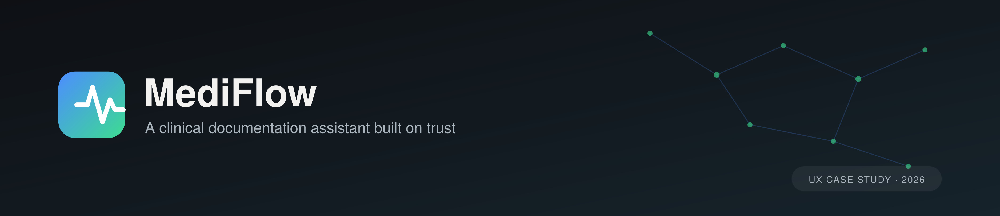
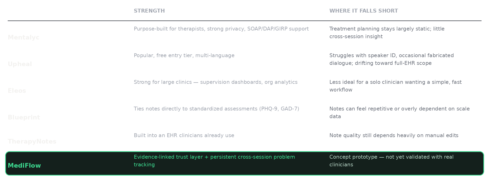
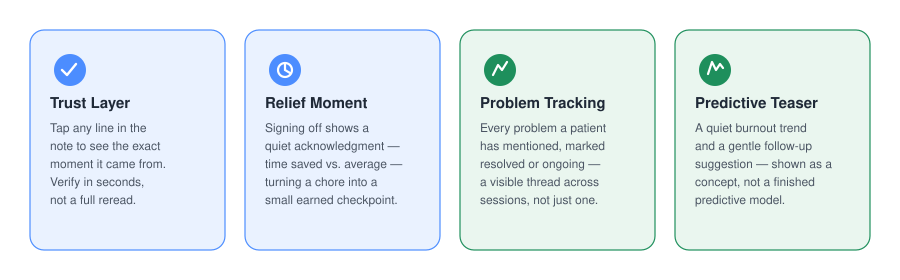
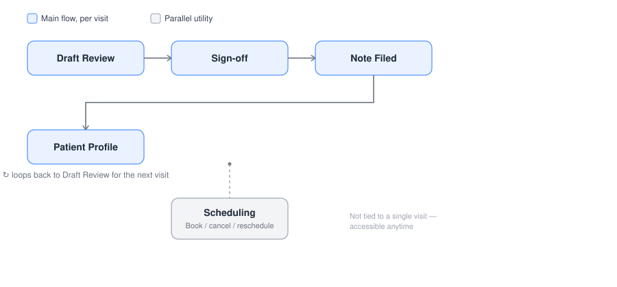
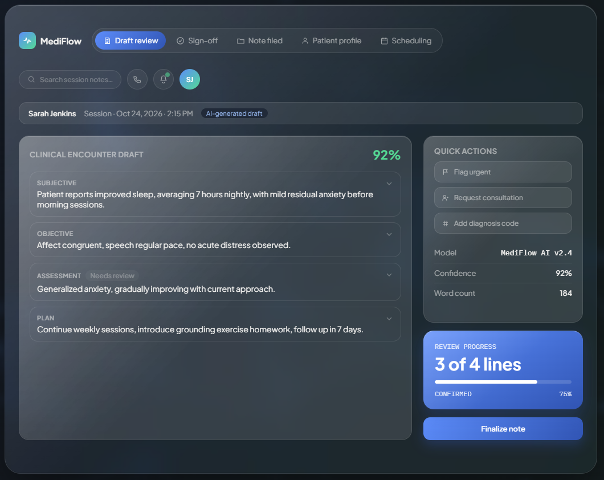
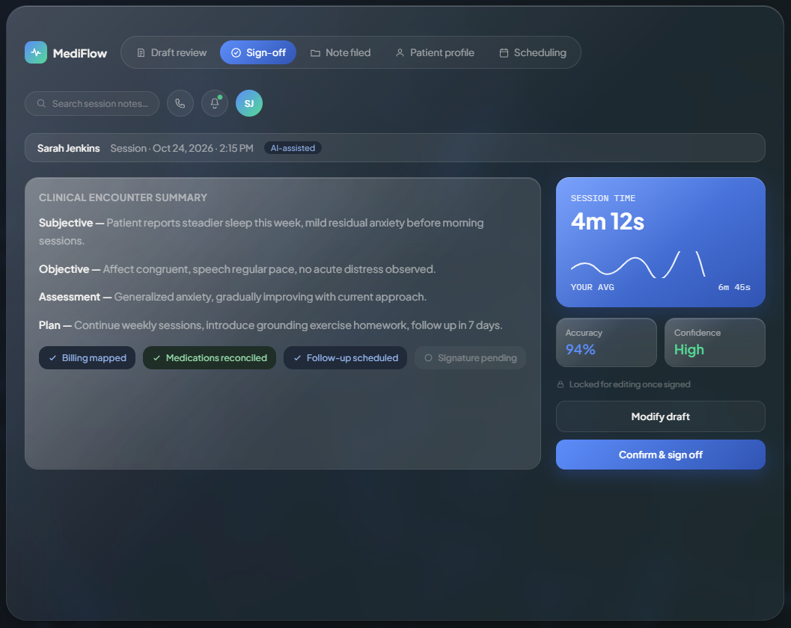
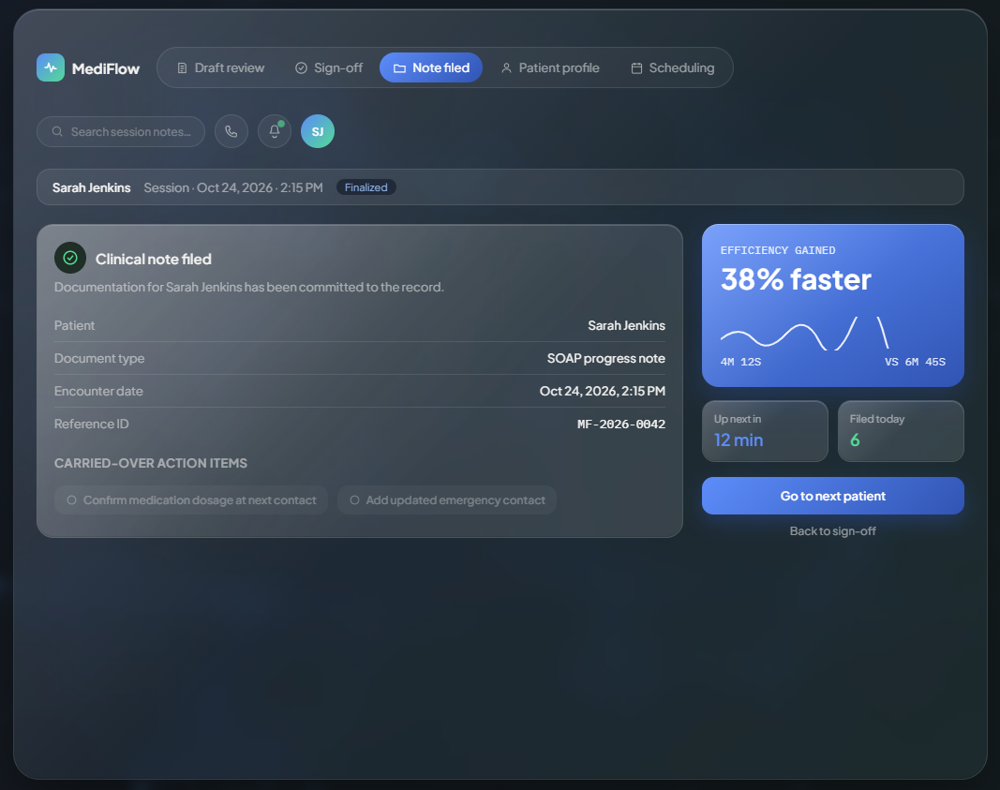
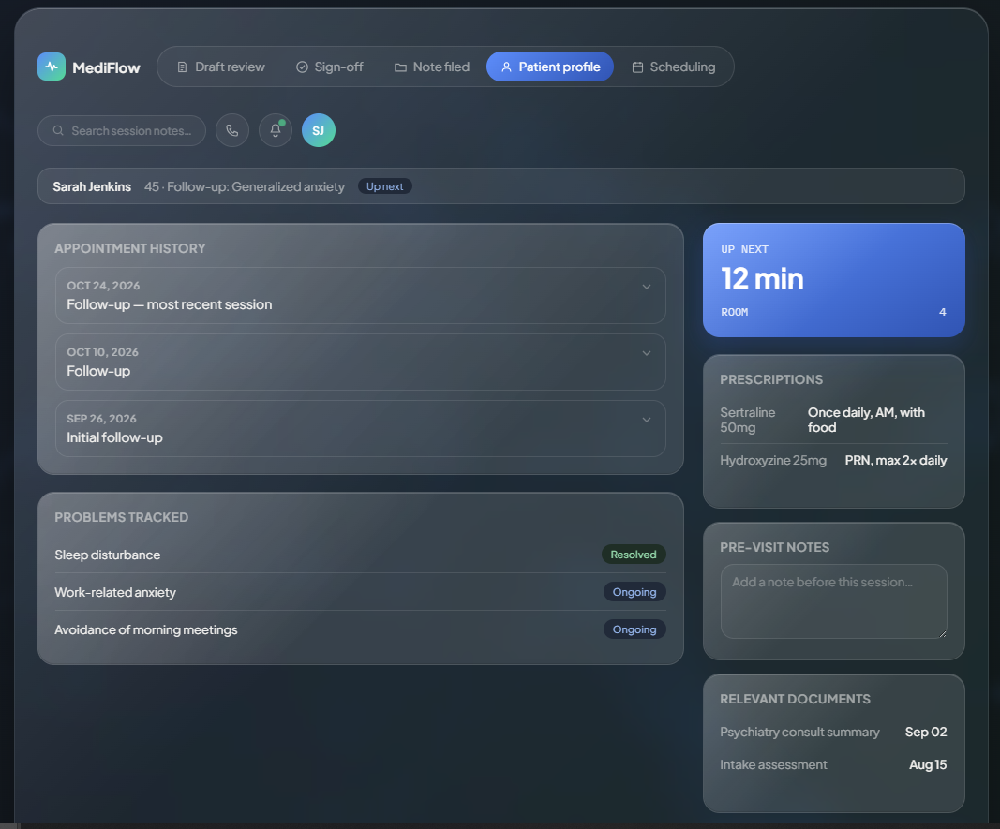
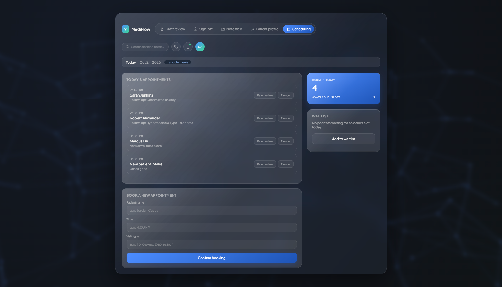

AI scribes for therapists got fast. Almost none of them got trustworthy. MediFlow starts from a different question: what would it actually take for a clinician to trust a note he didn't write, without rereading the whole thing?

Most AI documentation tools optimize for one thing: how fast can a draft appear. I started from a different question entirely — what would it actually take for a clinician to trust a note he didn't write himself, without rereading the whole thing? That reframing is the entire design rationale behind MediFlow's Trust Layer, and it's why this case study leads with verification, not generation.
It started with a complaint I kept hearing. A therapist I know would come home most evenings and spend the time he should've had to himself finishing patient notes instead. He'd started using an AI tool to draft them — fast, but he was never quite sure if what it wrote was actually right, so he ended up checking everything line by line anyway.
The tool was supposed to save him time. Instead, it just moved the work from writing to double-checking. That's the whole problem in one sentence: AI scribes have gotten fast. Almost none of them got trustworthy.
I looked at how the major AI documentation tools for therapists handle the one moment where trust is either built or lost: the review. Mentalyc is purpose-built for therapists with strong privacy, but treatment planning stays largely static. Upheal is popular with a free tier, but struggles with speaker identification and occasional fabricated dialogue. Eleos is strong for large clinics with supervision dashboards, but overkill for a solo clinician. Blueprint ties notes to standardized assessments well, but can feel repetitive. TherapyNotes is built into an EHR clinicians already use, but note quality still depends heavily on manual edits.
The gap: almost every tool solves drafting a single session well. Almost none of them solve continuity — keeping a patient's problems, progress, and history connected across sessions, the way a therapist actually has to think. Mentalyc calls this the "golden thread" and treats it as a premium feature, which tells you it's rare, not standard.

Three of these are fully designed and built. The fourth is included on purpose, but clearly labeled as a concept — I'd rather show you where the honest edge of this project is than blur it.
Trust Layer. Tap any line in the note, see the exact transcript moment it came from. Verification becomes a 2-second tap instead of a full reread — this is the direct answer to the problem statement above.
Relief Moment. Signing off shows a quiet acknowledgment — time saved versus your average — turning documentation from a chore into a small, earned checkpoint.
Problem Tracking. Every problem a patient has ever mentioned lives in one place, marked resolved or ongoing. This is the direct answer to the continuity gap the research surfaced.
Predictive Teaser (concept only, not a real model). A soft burnout trend and follow-up suggestion. I'm showing this deliberately as a sketch of a future direction, not a validated feature — there's no real model behind it, and presenting it as equal to the other three would be dishonest about what's actually built.

The main loop repeats every visit: Draft Review → Sign-off → Note Filed → Patient Profile, then back to Draft Review for the next patient. Scheduling sits outside that loop entirely — it's a utility accessible anytime, not tied to a single visit.
A real design decision worth calling out: when the AI flags something missing — a vitals reading, a follow-up date — it does not block sign-off. The flag travels forward into Sign-off, into Note Filed, as a visible to-do, instead of halting the clinician's day over an honest gap in the information. Blocking would have been the "safer" default; I chose not to, because a tool that stops a therapist mid-day over a missing field stops getting used.

The core of the Trust Layer. Tap any line to reveal its source, see a live accuracy score, confirm or flag lines individually — verification as a glance, not a reread.

The Relief Moment — a verification checklist, the session-time comparison, and the finalize action.

Confirms the note is committed, and shows exactly which flagged items carried forward as action items — the visible trail from the no-block decision above.

Appointment history, problem tracking with resolved/ongoing toggles, prescriptions, and pre-visit notes — the home of the continuity the research said was missing industry-wide.

Today's appointments, with real cancel/restore actions and a working booking form — deliberately built as a standalone utility, not bolted into the visit loop.

A dark, glass-material aesthetic — frosted panels over an animated network background, with a deliberately restrained two-color palette doing all the semantic work. No third accent color anywhere in the product: blue means primary action, green means resolved or confirmed, and that's the entire vocabulary.
Typography splits by intent: Plus Jakarta Sans for UI text, IBM Plex Mono for data labels and timestamps — anything meant to read as a precise system value rather than prose. Every card uses a layered "liquid glass" treatment — backdrop blur, a soft top-edge highlight, a diagonal glossy sheen — rather than a flat tinted box.
The background itself is a live Three.js particle network rather than a static image — a deliberate choice to make the "trust as a system, not a single feature" idea felt ambiently, even before a clinician reads a word of the UI.
Built as a dependency-free HTML/CSS/JS version and a parallel React port — same design system, same logic, idiomatic component structure in both. No backend, no real AI model, no database; this is a front-end prototype, and I'd rather say that plainly than let the polish imply otherwise.
Built: all five screens, full navigation, the Trust Layer interaction, problem-status toggles, a working client-side booking form.
Conceptual, not real: the Predictive Teaser card — no actual model behind the burnout trend or follow-up suggestion.
Next, if this became a real product: validate the evidence-linking pattern with real clinicians, prototype an actual predictive model against real outcome data, usability-test the gap-flagging tone so it reads as supportive rather than punitive, and replace the client-side booking form with a real backend.